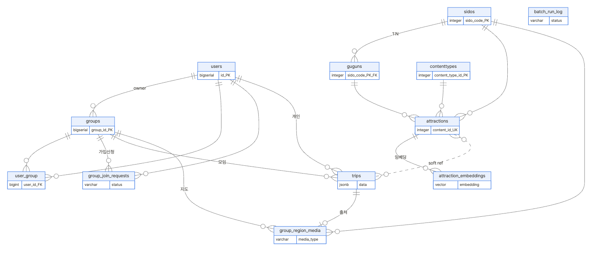
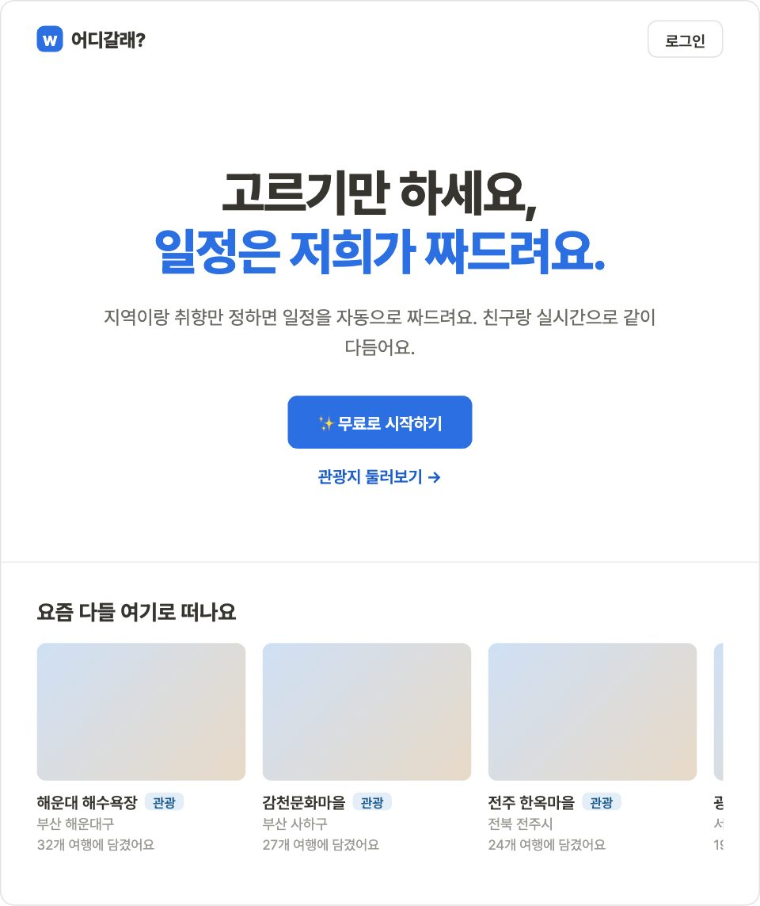
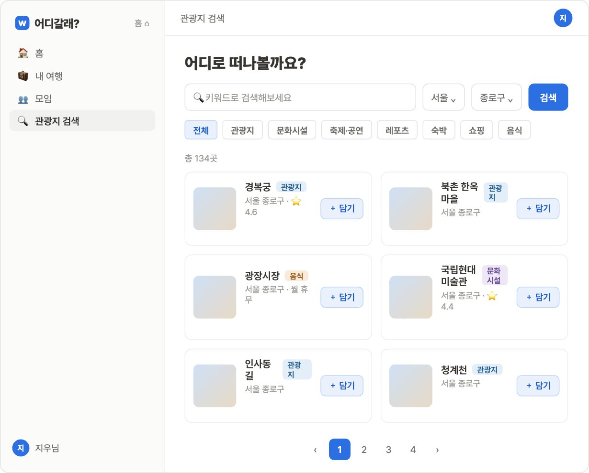
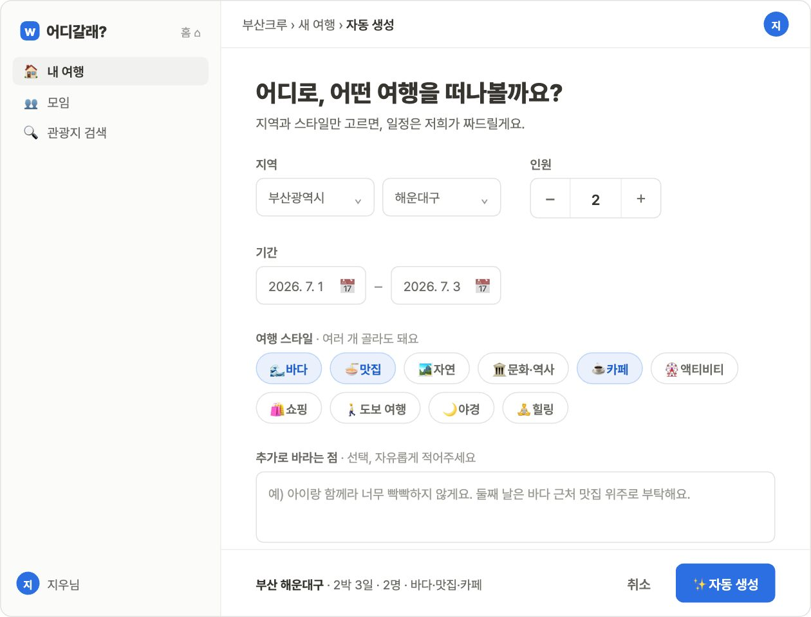
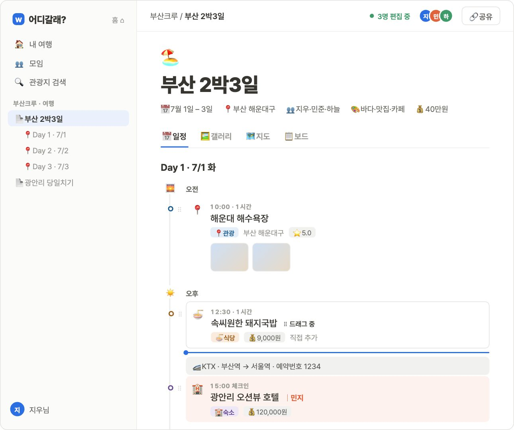
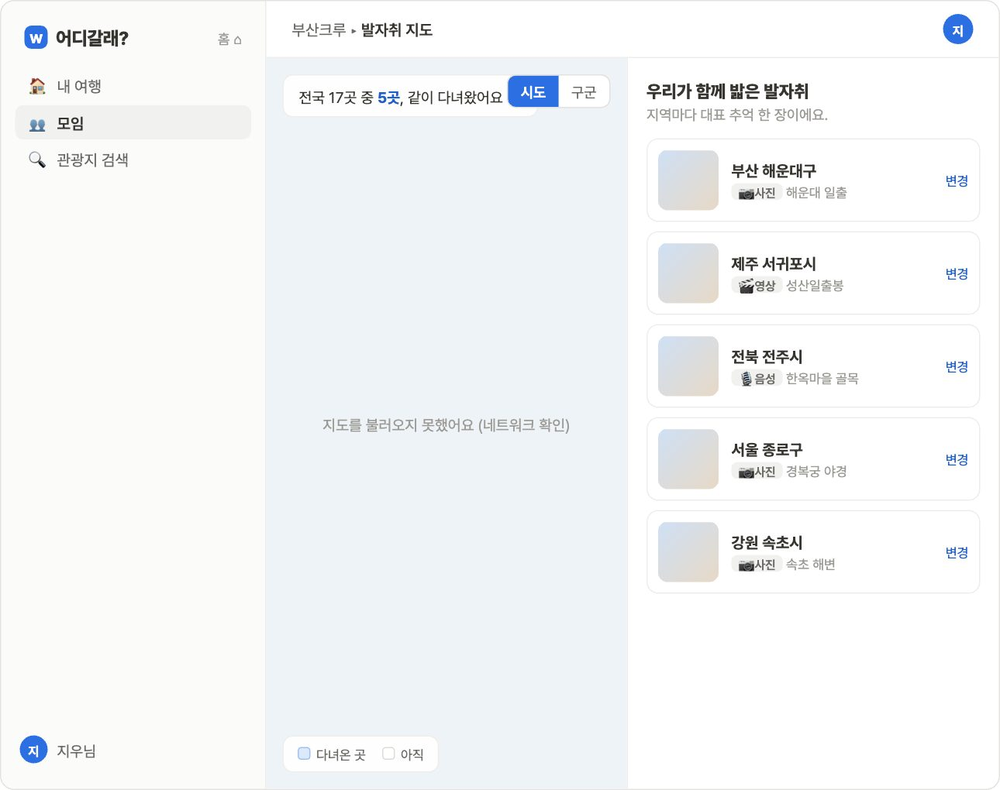

여행 계획을 자동으로 생성하고, 함께 수정하고, 추억으로 남기는 협업형 여행 플래너
기획 배경 · 추진 계획 · 시장 분석
핵심 기능 · 기술 스택
시스템 구조 · 분산 환경 · ERD · 데이터 모델
TourAPI 적재 · AI 벡터 검색 · 실시간 동기화 · 시연
DB 전환 · 메시지 유실 해결
기대 효과 · 개발 후기 · AI 사용 보고서
여행은 계획 → 공유 → 기억 전 과정이 번거롭다. 우리는 이 3단계를 한 서비스로 잇는다.
AI가 일정 자동 생성
실시간 공동 편집
발자취 지도로 추억
2026.06.09 ~ 06.23 · 15일 · 풀스택 2명 (Dev A 계획 / Dev B 협업·미디어)
| 서비스 | AI 일정 자동생성 | 실시간 공동편집 | 발자취 지도 | 특징 |
|---|---|---|---|---|
| 트리플 (Triple) | △ 추천 | ✕ | △ 타임라인 | 추천 강자, 협업 약함 |
| 마이리얼트립 | ✕ | ✕ | ✕ | 상품 예약 중심 |
| 구글맵 타임라인 | ✕ | ✕ | △ 자동기록 | 계획 도구 아님 |
| 어디갈래? (WSWG) | ✅ 의미검색+GPT | ✅ WebSocket | ✅ 공간데이터 | 3단계 통합 |
지역·기간·스타일 → GPT 후보 → 임베딩 의미검색(pgvector) → 이동거리 확정
WebSocket + Redis Stream 브로드캐스트, Worker가 trips.data로 flush, 프레즌스
사진·음성·영상 → 지역별 대표 추억을 PostGIS 핀 + 권역 색칠로 시각화
TourAPI 주간 동기 적재 + 상세 write-through 캐시로 응답 가속
Vue 3.5 · Vite 8
Pinia · Vue Router
Tailwind 4 · reka-ui
Naver Maps
Java 21 · Spring Boot 3.5
MyBatis
Spring Security
OAuth2 + JWT
PostgreSQL 16
PostGIS (공간)
pgvector (임베딩)
Redis
한국관광공사 TourAPI
OpenAI 임베딩
Naver Directions
ODsay 대중교통
WebSocket
Redis Stream·Pub/Sub
Flush Worker
Presence
Docker · Nginx
GitHub Flow · TDD
AGENTS.md 단일 규칙
GitLab 제출
클라이언트 → 애플리케이션 → 데이터, 3계층. REST(동기)와 WebSocket(실시간) 이중 채널.
편집 이벤트는 Redis Stream을 거쳐 Flush Worker가 trips.data(JSONB)로 모아 저장 · 상세: 클래스다이어그램.md
앱 서버는 무상태(stateless) · 공유 상태는 모두 Redis·DB에 → 수평 확장 가능.

관계가 있는 것은 정규화 테이블 · 자기 여행 안에서 끝나는 항목·미디어는 trips.data 문서 · 상세: ER다이어그램.md
관계 = 정규화 테이블 · 자기 여행 안에서 끝나는 항목·미디어 = trips.data JSONB 문서
sidosgugunscontenttypesattractionsattraction_embeddings
TourAPI 적재 + pgvector 의미검색
usersgroupsuser_groupgroup_join_requests
OAuth2 · 초대 링크 · 가입 승인
trips (JSONB)group_region_mediabatch_run_log
계획↔기록 · 지역당 대표 추억 1개
PostGIS geom = lat/lng GENERATED 파생(3NF) · 개인/모임 여행 XOR 제약 · 지역당 1개 UNIQUE
@Scheduled(cron="0 0 4 * * MON") — 매주 월요일 오전 4시 자동 실행. 변경분만 반영.
page1로 totalCount 확인 → 페이지 루프(numOfRows)로 전국 관광지 수집
sido·gugun·contentType FK 유효성 검사, 좌표·필수값 누락은 skip (skippedValidation/FK 집계)
ON CONFLICT (content_id) DO UPDATE — content_id 기준으로 신규는 INSERT, 기존은 갱신
batch_run_log에 1행 기록 — SUCCESS · DEGRADED · ABORTED
관리자 수동 적재(POST /load)로도 동일 엔진 실행 가능
키워드 매칭이 아닌 "의미(분위기)" 검색 — OpenAI 임베딩 + pgvector.
관광지 설명을 text-embedding-3-small로 1536차원 벡터화 → attraction_embeddings (HNSW 인덱스)
사용자 조건("바다 보이는 한적한 카페")도 같은 모델로 임베딩
pgvector <=> 연산자로 최근접 K개 검색 (HNSW 근사)
AI 자동 생성도 이 검색으로 후보 관광지를 매칭 → GPT가 동선을 구성
키 입력마다 DB를 쓰지 않는다. 편집은 Redis에 쌓고, 10초 주기로 한 번에 flush.

S1 · 랜딩 / 인기 여행지

S3 · 관광지 검색·목록

S5 · AI 여행 자동 생성

S6 · 여행 편집 — 3명 동시 편집 · 노션식 블록

S8 · 발자취 지도 — 지역 색칠 · 대표 추억
지역·기간·스타일 → 일자별 동선 후보
pgvector 코사인 유사도로 관광지 매칭
Naver·ODsay 구간 계산 → 현실성 확정
증상: 빠르게 타이핑하면 일부 글자가 저장되지 않거나 되돌아감.
편집을 op 큐(clientOpId)에 적재 → ack 받으면 제거 · BUSY는 백오프 재시도 · ack 타임아웃(4s) 재전송 · sync 수신 시 미전송 op 재적용 (PUT 폴백 제거)
권한 확인·state 워밍을 락 밖으로 (락 안은 Redis 전용) · appliedOps 집합으로 멱등 dedup (재전송 중복 적용 차단) · 제목·날짜는 PATCH /meta 로 분리
검증: BE 8 + FE 21 테스트 통과 · 텍스트 필드 last-writer-wins는 설계 한계로 후순위
정보 탐색·동선 구성을 AI가 대신 → 일정 초안 시간 대폭 감소
실시간 공동 편집으로 단톡 왕복·버전 충돌 제거
계획→공유→기억까지 한 서비스 → 리텐션 상승 기대
TourAPI·임베딩·공간 데이터 파이프라인을 타 지역·도메인으로 확장
팀 사진 — TODO
한 일 / 배운 점 / 아쉬운 점 — TODO
한 일 / 배운 점 / 아쉬운 점 — TODO
AGENTS.md 단일 작업 규칙 아래 Claude Code · Codex · Gemini 활용
| 도구 | 주 용도 |
|---|---|
| Claude Code | 설계 문서·화면 목업·구현·발표자료 |
| OpenAI Codex | 독립 코드 리뷰·버그 root-cause |
| Gemini | 보조 검토 |
| OpenAI 임베딩 | 제품 내장 — 관광지 의미 검색 |
AI 산출물은 항상 사람이 검증 · 상세: AI사용보고서.md
계획 → 공유 → 기억, 여행의 모든 순간을 함께.